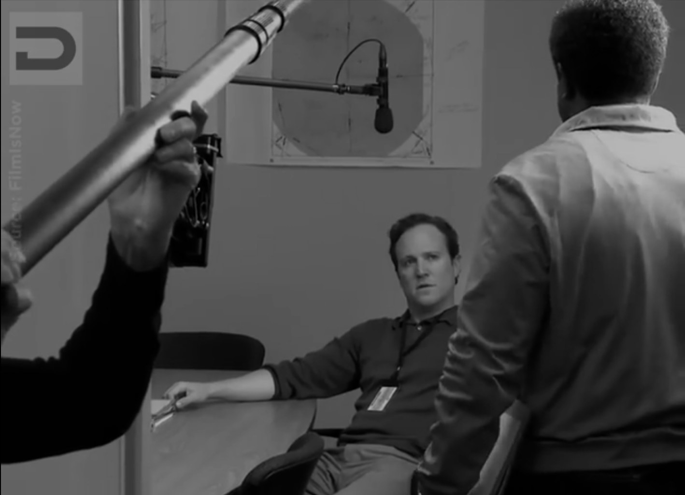
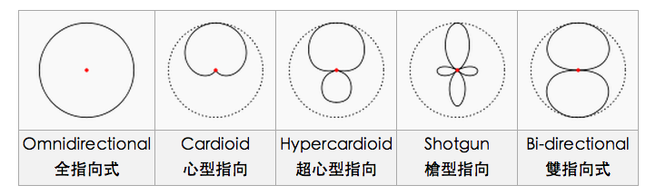
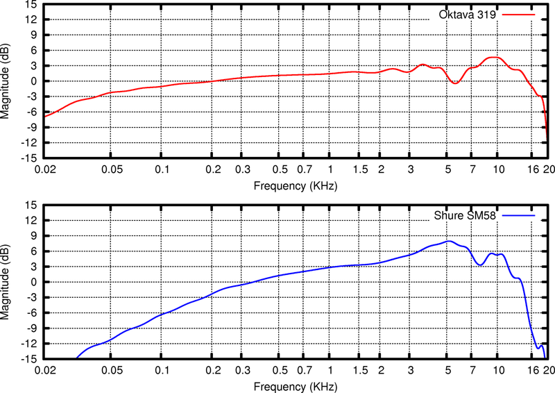
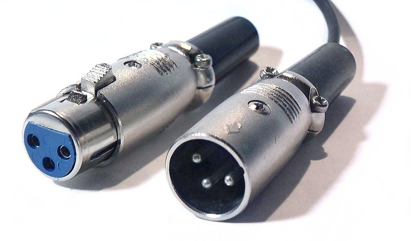
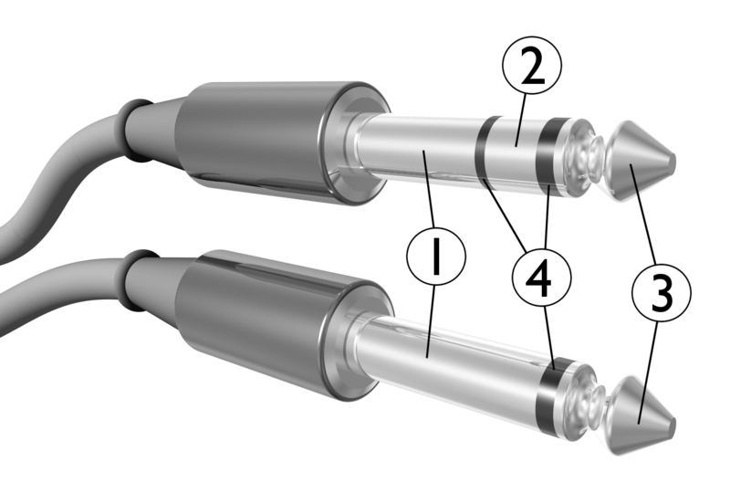
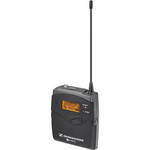

同步錄音
團隊
演員的台詞、呼吸與情緒。
在每一次開機之間，把表演的聲音留下來。

Behind the Boom
看一段片場側拍。
留意麥克風的位置、移動，以及它如何避開畫框。
攝影與收音各自需要什麼？
原教材外部影片，需連網；Facebook 可能要求登入。
聲音在電影流程中的位置
現場
後期
完成
麥克風指向性

均勻接收各方向的聲音
全指向適合需要自然空間感的情境。周圍的干擾聲也會一起被收進來。
麥克風頻率響應

同一個聲音，經過不同的麥克風，音色可能改變。
橫軸：頻率
從低頻到高頻，單位為 Hz。
縱軸：相對電平
凸起處較突出，凹陷處較弱。
教室討論：台詞清楚，代表高頻越多越好？
還需要考慮演員音色、齒音、距離和場景。先聽聲音，再判斷曲線是否適合。
阻抗與前級
麥克風輸出阻抗
通常低於
前級的輸入阻抗
查看兩端的規格，確認設備相容。
阻抗的單位是歐姆（Ω）。
低阻抗
< 600 Ω
中阻抗
600–10,000 Ω
高阻抗
> 10,000 Ω
右側為原教材的概略分類；實際連接請依器材規格。
XLR 接頭

屏蔽／接地
Shield / Ground正相訊號
Hot (+)反相訊號
Cold (−)接頭要插牢。
線材要留出移動空間。
TS 與 TRS

原教材：1 接地 / 2 Ring / 3 Tip / 4 絕緣環
| 接點 | 承載的訊號 |
|---|---|
| Tip | 左聲道 L |
| Ring | 右聲道 R |
| Sleeve | 接地 |
TRS 的兩個訊號接點，分別承載左、右聲道。
我們要收的是什麼？
戲劇需要的聲音，
就是我們的訊號
台詞、呼吸、鼻息，以及與表演相關的動作。干擾這些聲音的背景，則是這次收音要處理的噪音。
好的收音，讓訊號更突出
移動兩個滑桿。觀察同一段訊號，在不同背景噪音下的差異。
訊號 − 噪音
訊號只比背景高一些，細節容易被掩蓋。
同一參考下的 dB 電平，可直接相減。數值為教學示例。波形自動縮放；試聽為合成聲，非現場測量。
提高訊噪比的兩種方向
噪音變小
保留演員飽滿的表演音量，先處理背景的干擾。
協調可暫停的機器、處理摩擦、等待干擾聲離開，讓訊號有更多空間。
訊號變大
背景難以控制時，思考需要的聲音能否更突出。
如果戲劇本來就是吶喊或高能量表演，較大的聲源音量可能壓過背景。
靠近我們需要的聲源
即使背景沒有變小，麥克風靠近演員，直接聲仍可以更突出。
簡化模型：1 m 處訊號 64 dB、背景 58 dB。
自由場點聲源的距離每減半，聲壓級約增加 6 dB。背景假設固定；實際空間與音色需要監聽。
戶外廣播也適用這個思考：先確認目標是廣播內容或演員，再靠近那個目標聲源。
調大增益，兩者一起變大
麥克風已經收到的台詞與背景，經過理想放大器後會一起提高。
教學模型不計額外電子噪音。實務仍需設定適當增益，兼顧底噪與峰值餘裕。
比例維持相同
錄音團隊配置圖
點角色看分工；窄螢幕可左右滑動配置圖。
決定整體收音策略
規劃麥克風佈局、混音比例與音軌，操作錄音機，確認錄音品質，並與其他部門溝通。
混音台＋錄音機：訊號怎麼走？
整合式錄音機：集中混音與記錄
Boom Operator 的器材
Shotgun 麥克風對準需要的表演聲音，位置須跟著演員與鏡頭調整。
收音助理的器材

無線發射器連接演員的領夾麥克風，配戴位置需要兼顧服裝、動作與訊號。
開拍前共同確認
已確認 0 / 7 項
讓下一位工作者看得懂
SOUND REPORT
- SLATE
- 1 / 1 / Take 1
- CH1
- Boom
- CH2
- 演員 A 領夾
- NOTES
- 尾句有車聲，已補收 WT
板號對得上檔名，音軌對得上內容，備註說清楚現場狀況。
錄音檔案與格式
Poly WAV
一個 WAV 檔，容納多個音軌。每一軌仍需要清楚標注。
Mono
每個音軌各自存成單聲道檔案。檔案與聲源的對應要清楚。
Mix L/R
現場混合後的左、右聲道，方便快速聆聽整體聲音。
Poly / Mono 描述封裝方式，Mix 描述混音內容。先與後期確認，再設定檔名、音軌名稱與現場備註。
聲音報表常用縮寫
縮寫慣例依劇組而異，開始工作與交接前先確認。
當天完成檔案與報表
核對
場、鏡、Take 與音軌內容一致。
命名
依專案約定整理。
s1-1_t1.wav
備註
問題、選用 Take 與補錄聲音都有記錄。
交接
整理電子報表，核對並依規範完成備份。
原教材報表範例，可點擊放大。
必要的補錄工作
單收台詞與動作
有干擾的段落，安排時間單獨補錄。
空間底音與環境音
留下空間與場景的聲音，協助後期銜接。
當場次立即補收
演員仍在該場戲的狀態時，優先補收需要的台詞。
留意畫外音
隨時確認是否有未入鏡、卻需要現場表演的聲音。
禮貌與創作判斷
我們正在完成的是
一個需要聲音的
影像作品
保持友善與禮貌，
也清楚提出聲音上的創作需求。
聲音為影像增加情緒、空間與意義。
每一個收音決定，都要回到這場戲。
用手邊的工具拍一場戲
張家漢，回去了啦
你比我還瘋你知道嗎？啊？
回去了啦
你再走我不理你了喔
我說真的喔
你什麼時候理過我？
告訴我，你什麼時候理過我？
列出需要留下的台詞、呼吸與情緒。
找到噪音來源，決定麥克風位置。
拍一個 Take，回聽並記錄問題。